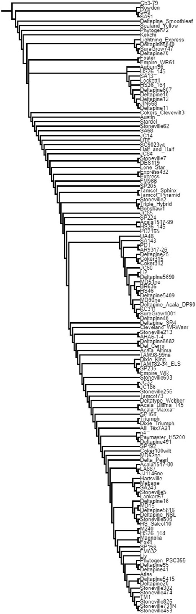
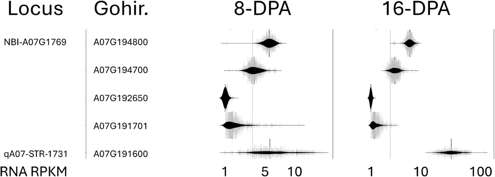
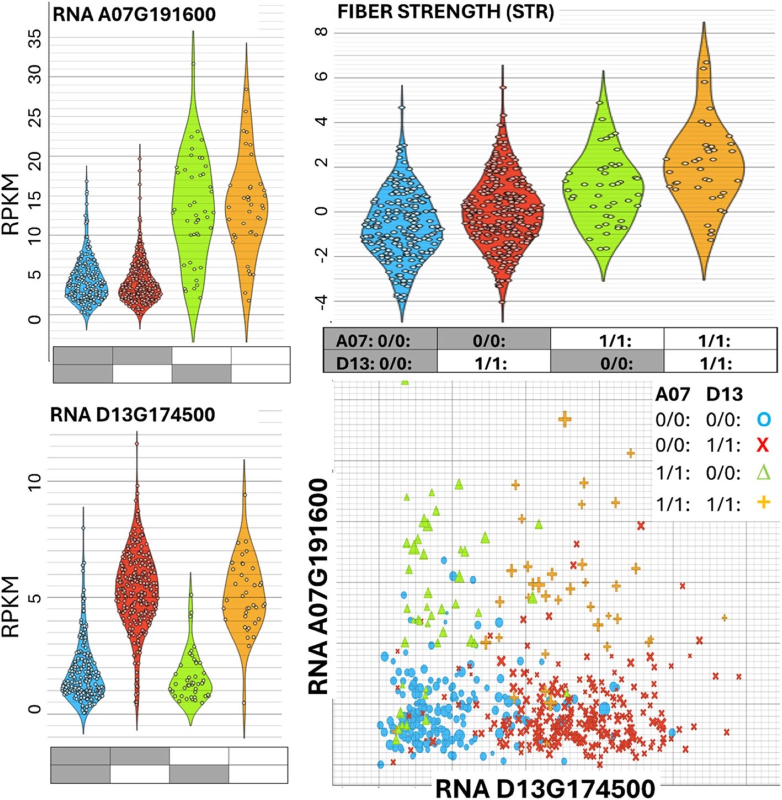

Research / Plant genomics
Allele and Transcriptome Mining Reveals Candidate Genes for Cotton Fiber Quality and Textile Flammability
Thyssen, G.N., Smith, W., Naoumkina, M., Pinnika, G., Jenkins, J.N., McCarty, J.C., Li, P., Florane, C.B., Jones, D.C., Fang, D.D. (2025). BMC Plant Biology 25, 305. Co-author.
My role: Assisted with table preparation. (from the paper's author contributions)
Read the paperSummary
Historic cotton cultivars hold genetic diversity that breeders can use to improve fiber length, strength and maturity, and possibly textile flammability. This study combined DNA variation from newly sequenced cultivars with RNA expression from a large MAGIC population to identify candidate genes at known fiber quality loci.
Key result. Multi-mining of DNA and RNA variation identified candidate genes at major fiber quality QTL, including strength loci on A07 and D13 with an additive epistatic effect, and released an annotated variant file covering 24,996 loci in 10,418 fiber genes.
Data and approach
| Component | Details |
|---|---|
| DNA | Whole-genome sequencing of 132 historic G. hirsutum cultivars and lines |
| RNA | Fiber transcriptomes of 550 MAGIC recombinant inbred lines at 8 and 16 days post anthesis |
| Strategy | Find fiber-expressed genes with both coding or regulatory DNA variants and genotype-specific expression near known QTL |
| Flammability | Candidate genes mined by homology to potential textile flammability genes |

Results
| QTL | Trait | Candidate gene |
|---|---|---|
| qA07-STR | Fiber strength | Gohir.A07G191600 |
| qD13-STR | Fiber strength | Gohir.D13G174500 |
| qA13-MIC | Micronaire (maturity) | Gohir.A13G157500 |
| qD04-ELO-WLIM | Elongation | Gohir.D04G160000 |
| qD11-UHML-KRP6 | Fiber length | Gohir.D11G197900 |
| A03-WLIM (new) | Transcription factor | Gohir.A03G182100 |
- At the qA07-STR strength locus, the candidate gene carries a transposon-derived promoter indel and a variant that disrupts a nuclear export signal.
- Alternative alleles of the qA07-STR and qD13-STR candidates show higher expression at 16 days post anthesis and act additively on fiber strength.
- Several expression variants were found in candidate flammability genes, a trait likely shaped by many small-effect loci.


Takeaways
- Pairing population-scale DNA variation with population-scale expression narrows QTL to testable genes.
- The released variant annotations are a resource for cotton breeders and geneticists.
Figures reproduced from the paper under its CC BY 4.0 open-access license.